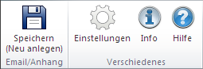

Einführung¶
Outlook-Oberfläche:
Die Outlook-Anwendung wird durch die Installation um die OfficeLink-Menü- und Symbolleiste erweitert.
Outlook: OfficeLink-Symbolleiste
Email/Anhang neu anlegen:
Die System Microsoft Office Integration bietet für Outlook die Möglichkeit, einzelne Nachrichten direkt aus Outlook heraus in Form einer
MSG-Datei als Dokument im System zu archivieren.MSG-Dateien repräsentieren in Outlook ein vollständiges Nachrichtenobjekt inklusive sämtlicher Anlagen (Attachments). Die Erweiterung bietet dem Benutzer weiterhin die Möglichkeit, gegebenenfalls enthaltene Anlagen der jeweiligen (selektierten) Nachrichten separat im System zu archivieren und/oder die Nachricht selbst. Der Benutzer bekommt dabei - in Form eines Dialoges - die Option, auszuwählen, welche Elemente separat archiviert werden sollen. Zusätzlich kann bei jedem kompletten Archivierungsvorgang entschieden werden, ob separat archivierte Anlagen im Vorfeld aus der Nachricht (MSG-Datei) extrahiert werden sollen, bevor diese selbst im System archiviert wird. Weiterhin wird im Rahmen des Archivierungsvorgangs dem Benutzer die Option geboten, ob im Anschluss an eine erfolgreiche Archivierung die Nachrichtendatei automatisiert in Outlook zu löschen ist.Für jede einzelne zu archivierende Datei (sowohl Nachricht als auch Nachrichtenanlagen) wird in CIM Database/WIN die Neuanlagemaske aufgeblendet. Bei der Neuanlagemaske für die Nachricht besteht die Möglichkeit, durch Konfiguration vom System einzelne Felder mit Informationen (wie beispielsweise Betreff oder Absender ) der zugrunde liegenden Nachricht vorzubelegen.
Bemerkung
Falls Anhänge nicht als Dokumente angelegt, sondern in CIM Database/WIN als Dateien an die Mail-Dokumente gehängt werden, wird die Neuanlagemaske für diese Dateien automatisch ausgefüllt und übersprungen.
Bemerkung
Die Zuordnungskonfiguration der Metadaten einer Nachricht und den jeweiligen System-Attributen einer Neuanlagemaske nimmt der System-Administrator vor.
Dokument anhängen:
Das Add-In bietet darüber hinaus die Möglichkeit beim Verfassen einer neuen Nachricht Dokumente aus dem System direkt der neuen Nachricht als Anlage anzuhängen. Dieser Vorgang wird über eine Symbolleiste des Nachrichtenfensters initiiert.
Einstellungen:
Auf die Einstellungsmöglichkeiten im Optionsdialog wird im OfficeLink Administrationsbuch eingegangen. Wenden Sie sich bei Fragen an ihren System-Administrator.